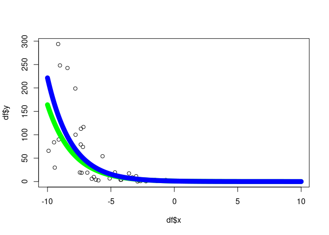

An algebra over maximum likelihood estimators (MLE).
MLEs have many desirable, well-defined statistical properties. We define an algebra over MLEs.
Installation
You can install algebraic.mle from GitHub with:
install.packages("devtools")
devtools::install_github("queelius/algebraic.mle")API
The object representing a fitted model is a type of mle object, the maximum likelihood estimator of the model with respect to observed data.
The API mostly consists of generic methods with implementations for various mle type objects. For a full list of functions, see the function reference for algebraic.mle.
Let’s fit a conditional exponential model to some data. In this model, Y | x ~ EXP(rate(x)) where rate(x) = exp(b0 + b1*x). First, let’s create the DGP (data generating process):
Let’s generate some date:
n <- 200
b0 <- -5
b1 <- .5
df <- data.frame(x = rep(NA, n), y = rep(NA, n))
for (i in 1:n) {
x <- runif(1, -10, 10)
y <- dgp(n = 1, x = x, b0 = b0, b1 = b1)
df[i, ] <- c(x, y)
}Now, we define two functions, resp, rate, and loglik function which will be used to define the model.
resp <- function(df) df$y
rate <- function(df, beta) exp(beta[1] + beta[2] * df$x)
loglike <- function(df, resp, rate) {
function(beta) sum(dexp(x = resp(df), rate = rate(df, beta), log = TRUE))
}Let’s fit the model. We’ll use the optim function in stats to fit the model and then wrap it into an mle object using mle_numerical.
library(algebraic.mle)
sol <- mle_numerical(optim(par = c(0, 0),
fn = loglike(df, resp, rate),
control = list(fnscale = -1),
hessian = TRUE))
summary(sol)
#> Maximum likelihood estimator of type mle_numerical is normally distributed.
#> The estimates of the parameters are given by:
#> [1] -5.0366809 0.4883971
#> The standard error is 0.07082793 0.01182874 .
#> The asymptotic 95% confidence interval of the parameters are given by:
#> 2.5% 97.5%
#> param1 -5.1531825 -4.9201794
#> param2 0.4689405 0.5078536
#> The MSE of the estimator is 0.005156515 .
#> The log-likelihood is -1171.433 .
#> The AIC is 2346.866 .Let’s plot it:
# plot the x-y points from the data frame
plot(df$x,df$y)
# now overlay a plot of the conditional mean
x <- seq(-10, 10, .1)
b0.hat <- point(sol)[1]
b1.hat <- point(sol)[2]
y.hat <- 1/exp(b0.hat + b1.hat*x)
y <- 1/exp(b0 + b1*x)
lines(x, y, col = "green", lwd = 10)
lines(x, y.hat, col = "blue", lwd = 10)
You can see tutorials for more examples of using the package in the vignettes.